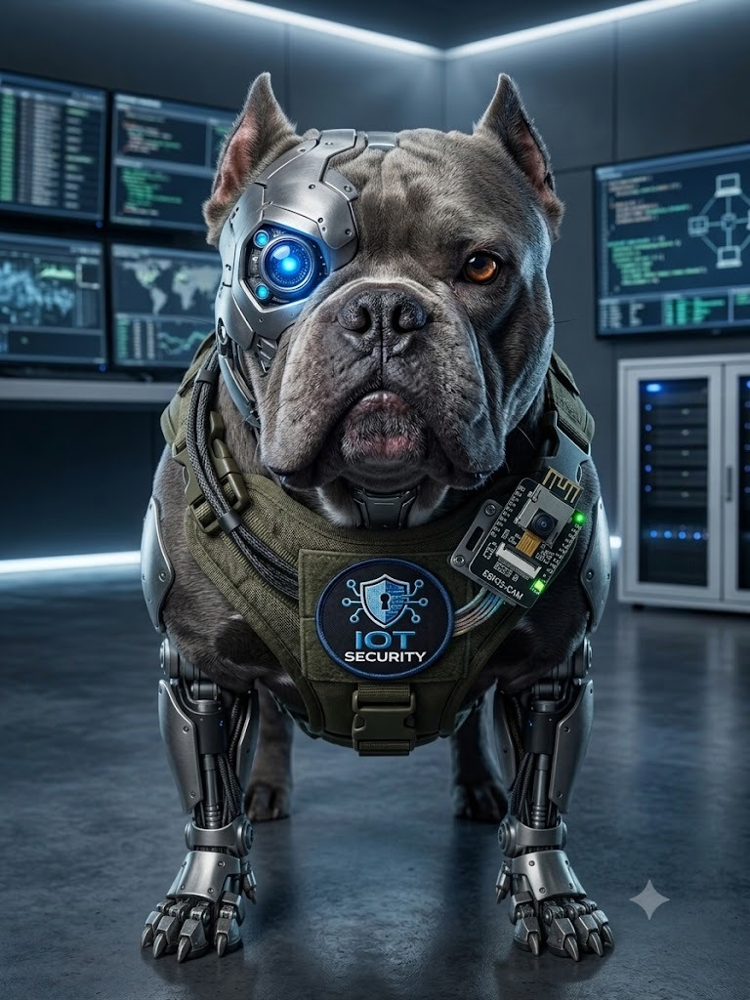

Plataforma de videovigilancia remota segura en tiempo real. Solución integral que resuelve el acceso NAT local mediante túnel reverso SSH, proxy de baja latencia en AWS Docker y autenticación criptográfica JWT.
Desarrollado por: Grupo 5 • Proyecto de Seguridad IoT

1. Problema Identificado vs. Solución Planteada
Problemas Identificados
Altos Costos de Cámaras Comerciales: Las cámaras de seguridad convencionales en el mercado son costosas y exigen pagos de suscripción mensual obligatoria para guardar o ver las grabaciones en la nube.
Dificultad para Ver la Cámara fuera de Casa: Ver la cámara cuando el usuario no está en su hogar suele requerir configuraciones complejas en la red o pagar servicios de internet costosos.
Riesgos de Hackeo y Falta de Privacidad: Muchas cámaras económicas de internet no protegen los datos del usuario, exponiendo el video del hogar a extraños o intrusos digitales.
Falta de Control y Dependencia de Terceros: El usuario no es dueño de su propio sistema; si la empresa de la cámara falla o cierra servidores, la cámara deja de funcionar.
Solución Tecnológica Planteada
Cámara Accesible y Económica de Bajo Costo: Sistema basado en la ESP32-CAM sin cobros de suscripción ni mensualidades para el usuario.
Conexión Remota Segura (Túnel SSH Reverso): Permite ver la cámara en vivo desde cualquier lugar sin necesidad de abrir puertos en el router del hogar.
Protección y Privacidad de Grado Profesional: Uso de contraseñas seguras y tokens JWT encriptados que garantizan que solo el dueño pueda ver el video.
Dashboard Web en Vivo y Nube (AWS + Supabase): Transmisión fluida en tiempo real desde la web y registro automático de eventos de seguridad.
2. Objetivos del Proyecto
Objetivo General:
Diseñar, desarrollar y desplegar una arquitectura integral de videovigilancia IoT segura, económica y de baja latencia, que permita el monitoreo y control remoto en tiempo real de una cámara ESP32-CAM desde cualquier lugar, garantizando la privacidad y la protección contra ciberataques.
3. Objetivos de Desarrollo Sostenible (ODS - ONU)
9
Industria, Innovación e Infraestructura
ODS 9 - ONU
Fomenta la innovación tecnológica accesible mediante hardware libre (ESP32-CAM) y software de código abierto en la nube (Docker en AWS EC2), promoviendo infraestructuras resilientes, sostenibles y de bajo costo para el desarrollo digital.
11
Ciudades y Comunidades Sostenibles
ODS 11 - ONU
Contribuye a la creación de espacios urbanos y residenciales más seguros mediante soluciones de videovigilancia democráticas y asequibles, reduciendo la vulnerabilidad comunitaria ante actos delictivos o accesos no autorizados.
4. Arquitectura de Despliegue End-to-End
RED LOCAL (NAT)
ESP32-CAM + autossh
Captura MJPEG en red local privada (detrás de router NAT)
Túnel SSH Reverso (autossh): Expone el puerto local a AWS
Transmisión encriptada sin requerir IP pública
MICROSERVICIO (AWS)
API de Hardware y Alertas
Servidor Node.js que consume el túnel y habilita CORS
Expone el stream MJPEG por HTTPS evitando Mixed Content
Bot de Telegram integrado para notificaciones instantáneas
SISTEMA CENTRAL (Vercel)
Plataforma Web React
Gestión de usuarios autenticados mediante Google Auth
Base de datos independiente para mantener consistencia y seguridad
Interfaz moderna y diseño UX de alto nivel
CLIENT-SIDE AI
IA Local (MediaPipe)
Procesamiento visual directamente en el navegador del usuario
Detección de personas en tiempo real sin saturar el servidor
Dispara webhook de alerta a AWS al superar 70% de confianza